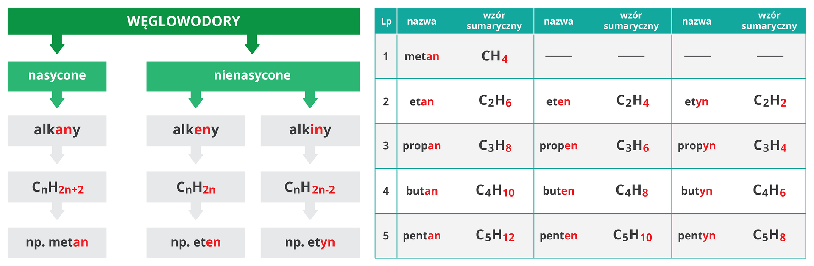

Definincje Alkanów ⚗️
WĘGLOWODORY NASYCONE (ALKANY) - związki, w których między atomami węgla występują wyłącznie wiązania pojedyncze.
WĘGLOWODORY NIENASYCONE - związki organiczne zbudowane wyłącznie z atomów węgla i wodoru, w których pomiędzy atomami węgla występują wiązania wielokrotne.

SZEREG HOMOLOGICZNY - zbiór związków organicznych o podobnej budowie i właściwościach, w którym każdy kolejny związek chemiczny ma w cząsteczce o jeden atom węgla więcej niż poprzedni.
-
Właściwości i zastosowania:
Właściwości Alkany Alkeny Alkiny Rodzaj wiązania między atomami węgla Wiązania pojedyńcze Jedno wiązanie podwójne Jedno wiązanie potrójne Wzór ogólny CnH2n+2 CnH2n CnH2n-2 Końcówka nazwy -an -en -yn Stan skupienia Stan gazowy, ciekły lub stały Rozpuszczalność w wodzie Nie rozpuszczają się w wodzie Palność Są łatwopalne, ulegają reakcjom spalania całkowitego i niecałkowitego Reaktywność Mało reaktywne Są reaktywne, ulegają reakcjom przyłączenia Odbarwienie Nie odbarwiają Odbarwiają Polimeryzacja Nie ulegają Ulegają
Zastosowania Alkany Alkeny Alkiny Gaz ziemny - metan Kwas octowy i alkohol etylowy - etan Gaz do zastosowań technicznych - etyn Benzyna i oleje napędowe - mieszanina węglowodorów Rolnictwo - eten Tworzywa sztuczne - etyn Pianki do golenia - propan Tworzywa sztuczne - eten Palniki acetylenowo-tlenowe - etyn - Rozpuszczalniki farb i lakierów - eten -
-
Reakcje: